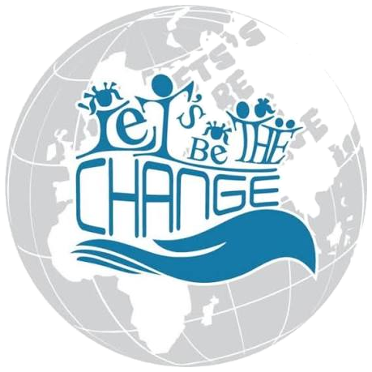
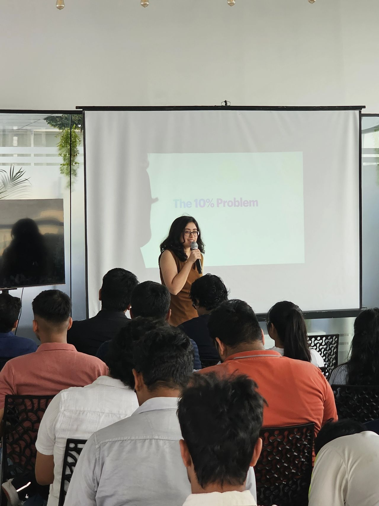
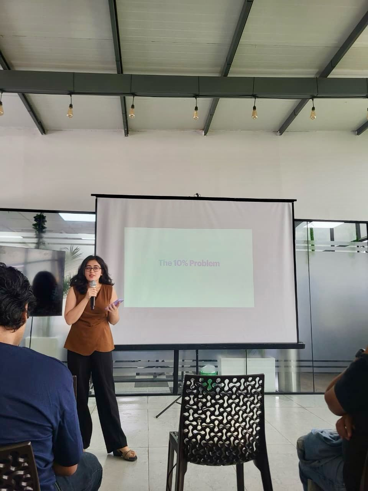
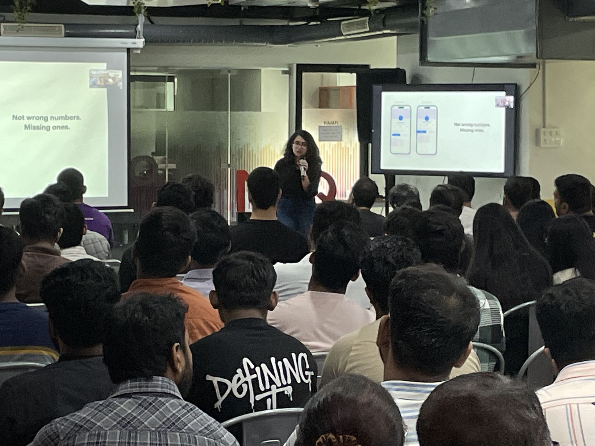
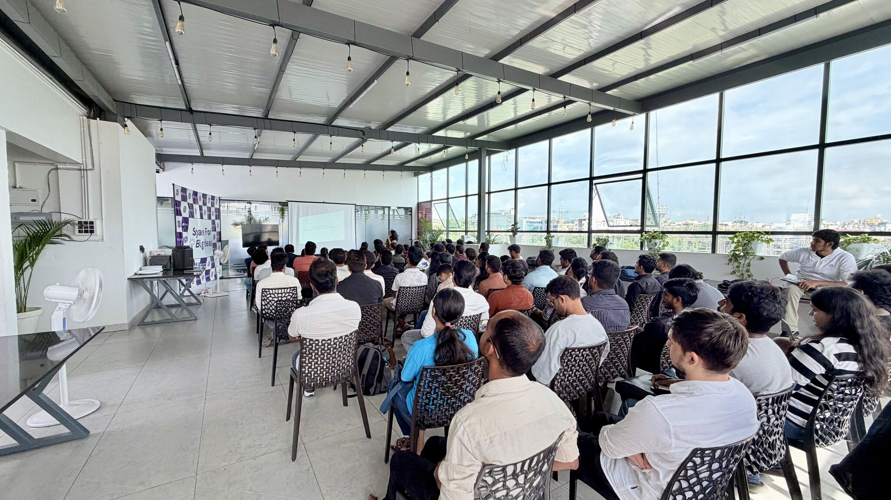
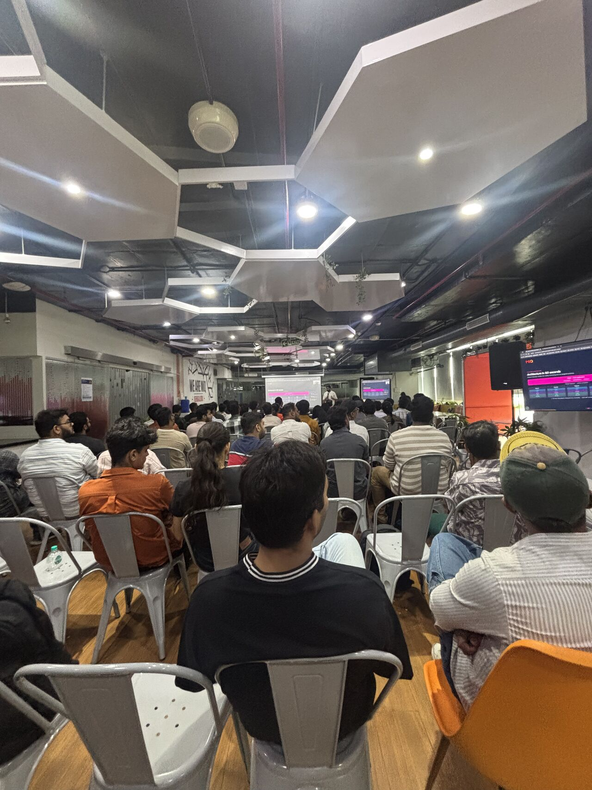
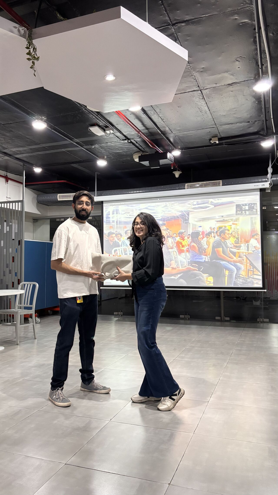

I run the research, design the system, and write the React that ships it, so nothing gets lost in the last 10%.

1. MIQ Bangalore and 2. ReactPlay both featured the ten percent problem. In both talks I explained how that problem is the same signal whether I am working on a product flow or presenting a design idea on stage.
That means I do not need two separate stories for the same lesson. I show how the ten percent problem appears in real product work and in the way teams communicate across design and engineering.






User research competitive analysis IA mid to high fidelity UI in Figma design systems.
React AWS PWAs API integration incl LLM APIs I ship what I design front to back.